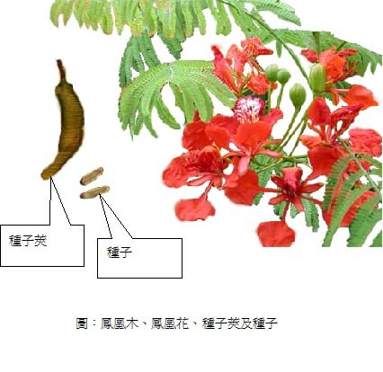

小心有毒的植物
在美國加州，一個男孩在一棵蓖麻油樹上摘下兩顆豆子，吞服之後，不久就死了。
一個少女在紫藤上摘下一隻種子萊，吃了幾顆種子，結果病得很重，嘔吐、下痢、腹部腫大。在亞州，一個小女孩吃了牽牛花，事後生了病。
這些驚人的意外，都是植物中毒的標準例子。它們都是一件不大為人知道的事實證據:很多普通植物，含有毒素如果吃了，會發生嚴重病痛甚至致命的結果，就全世界論，有毒的植物何足千百種。這些植物並不是全部會致命的，並且，在普通的住宅附近，大部份都不會被發現。不過，在這些有毒的植物之中，卻包含了一些最引人注目和最可愛的籐子、灌木和花卉。
由於植物中毒的事情比較少，甚至植物專家都可能懷疑這些普通的植物是不是全部有毒的。
茲列舉常見有毒的植物如次:
一、蓖麻油樹:
這是一種生長得很快的大葉植物，看來頗為悅目，它的種子蓖麻子（Castor Bean）是做蓖麻油（Castor Oil）的原料，蓖麻油在去毒後一般用作滋潤、保濕之油脂，但原始的蓖麻子含有一種危險的毒素。
蓖麻子曾經在兒童中引起死亡的案由，它很可口，但只吃 兩顆，就足以使人嗚呼哀哉。
（圖1是蓖麻子與蓖麻樹）
二、紫藤:
紫藤（Wisteria）是一種普通裝飾用的藤子，花朵呈美麗紫色，但它的種子和種子的莢，如果吃了，都是危險的，會引起噁心、腹痛、腹脹並不停地嘔吐和瀉痢。世界各國，曾經報告很多紫藤中毒的例子。一個小孩只吃兩顆紫藤豆，居然也生了大病。
三、鳳凰木：
鳳凰木（Flame Tree）台灣中南部種植很多，約十幾公尺高，每年6、7月學校舉辦畢業典禮時，是它們盛開花朵的時候，花大紅色，開花後結出一條條長形豆莢果，長可達60公分，成熟後呈深褐色，木質化，內藏40-50粒的小種子，種皮有斑紋。鳳凰木的花和種子有毒，小孩誤食種子後有頭暈、流口水、腹脹、腹痛、下痢等症狀。

四、蔓陀羅:
曼陀羅屬包括大花（白花）曼陀羅、紅花曼陀羅、紫花曼陀羅、毛曼陀羅、歐曼陀羅、無刺曼陀羅、重瓣曼陀羅等種類。台灣之曼陀羅種類的中毒以大花曼陀羅最常見。曼陀羅這一類的植物有都是有毒的，有些兒童吃了一些它們的種子，都不治而死。患敏感症的人，接觸到任何種類的蔓陀羅，反膚都會發生反應，痛楚不堪。曼陀羅有麻醉作用。古人將此藥取名為「蒙汗藥」。20 世紀 70 年代，蔓陀羅為主的中藥麻醉劑，這種麻醉方法已引起國外醫學專家的重視。

圖：蔓陀羅果實 圖：大花（白花）曼陀羅
五、夾竹桃:
夾竹桃是一種做飾品的植物，住宅庭院和道路邊都可以看見，夾竹桃的每一部份都是危險的。它的花經蜜蜂採過做成的蜜，吃了令人致命。兒童咬過它的花、葉子或樹枝的，都會死亡。用夾竹桃枝椏做燃料烹調的食物是有毒的。和夾竹桃的葉子、樹皮、樹液接觸，都會引起嚴重的皮膚過敏症。有些地方，禁止燃燒夾竹桃的枝椏和葉資子，這些東西燃燒時的煙，是異常刺激的。

圖：夾竹桃的每一部份都有毒。
六、雞母珠:雞母珠（Rosarypea）落葉灌木，種子成精圓形，朱紅色，頂端有黑點，又稱想思子或相思豆，種子苦可作各種裝飾，含劇毒，誤食少量會惡心、嘔吐、流冷汗、脈博加速，量多時可致死。雞母珠在台灣中南部河岸、山麓及原野路旁皆可遇到。

圖：雞母珠及雞母珠樹
七、有毒花類:
有時栽培或野生的花類也含有劇毒，譬如:台灣常見的牽牛花及杜鵑花類皆有毒，牽牛花全株有毒，種子毒性最強，服用過量造成嘔吐腹痛、血便、甚至損及舌下神經，使舌頭麻痺造成說話困難，杜鵑花類也是全株有毒，誤食會產生嗯心、血壓
下降、呼吸抑制、昏迷。

圖：台灣常見的杜鵑花（左）及牽牛花（右）皆有毒。
八、馬鈴薯的芽與枇杷的種子人類的最重要的主食糧食作物世界上除了穀物國人常吃的馬鈴薯與枇杷，也要小心，因為馬鈴薯的芽與枇杷的種子都有毒，馬鈴薯是目前以外，用作，生長過程會產生茄鹼，成熟採收的馬鈴薯塊莖含有極微量的茄鹼，一般對人體沒有危害，但若馬鈴薯發芽，茄鹼會大量累積，釋放神經毒素。吃了可能出現嘔吐、噁心、腹痛、腹瀉等症狀，嚴重者會導致昏迷、死亡。枇杷的種子和幼葉都有毒，孩童吃了20粒以上的種子會有頭昏、惡心、嘔吐、下痢、呼吸困難、肌肉痙攣等現象，甚至死亡。

圖：馬鈴薯與芽 圖：枇杷與種子
大多數植物中毒事件，都和兒童有關，他們時常到這些顏色鮮艷，氣味芬芳的花卉和漿與種子的吸引。通常，植物中毒的事件不多，不過，由於診斷困難，每一件中毒案都是危險的。植物中毒的病情，可能和下述的病症相似：急性消化不良、盲腸炎、癩病、腦膜炎、腦炎、腦溢血和霍亂。中毒的徵候可能包括頭昏腦脹和疼痛等等。
如果你懷疑一個兒童或成人已經發生植物中毒的情況，您應該立即把他送醫，並請教醫生同時注意下列兩點：
甲、如果你知道和什麼植物有關，並且可以說出它的名字，要把它告訴醫生。如果他也不知道特殊的治療方法，他可以去向相關人士或機構請教。
乙、如果你不知道種植物的名字，亦可到附近的博物館、植物學者或園藝所去敘述它。 甚至可以去請教中學或大學教植物的老師或朋友。
差不多所有的植物中毒都可以防止。你家附近有毒的植物，都要弄清楚．指出它們的危險性並叫你的孩子們遠離它們，公園的花朵植物，不要去摘折它們，這些植物是觀賞用，它們有些是含有毒性，譬如南港區有公園種有海檸檬果，其毒性之強，只要吃半個果仁即可致死，因此家長帶孩子至公園遊玩時，要告訴孩子不可隨便摘折花木，如有認識之有毒花木，並告訴其危險性。
圖：台灣許多公園都有種海檸檬果，其毒性之強，只要吃半個果仁即可致死。